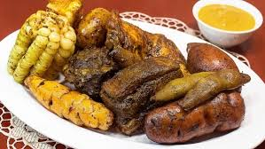
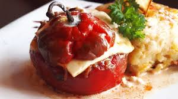
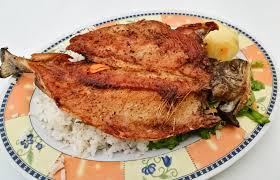

La pachamanca es un plato tradicional andino que se cocina bajo tierra con piedras calientes. Contiene carnes variadas, papas, habas, choclo y hierbas aromáticas.
Plato típico de Arequipa que consiste en un rocoto (ají picante) relleno de carne, maní, huevo y especias, horneado con una capa de queso encima.
Plato muy consumido en zonas altoandinas. Se trata de una trucha fresca frita y servida con papas doradas, ensalada y arroz.
